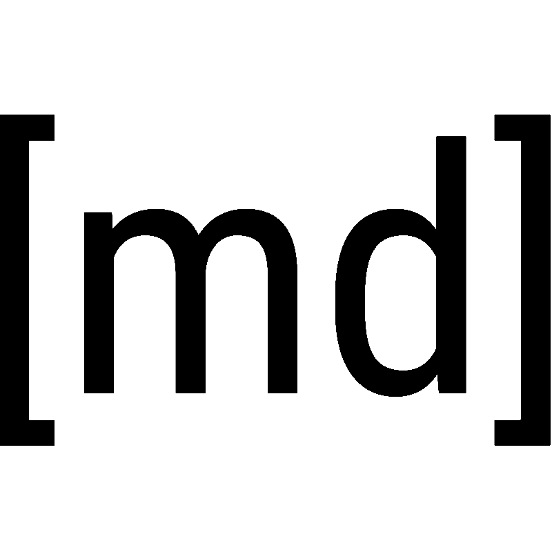
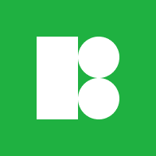

<!-- build time:Wed Nov 27 2019 10:46:41 GMT+0000 (Coordinated Universal Time) --><!DOCTYPE html><html><head><meta charset="utf-8"><title>Zhy Blog</title><meta name="viewport" content="width=device-width,initial-scale=1,maximum-scale=1"><meta name="description" content="{“Web学习资源网站”: [{“title”:”freeCodeCamp”,“img”:”index&#x2F;logo-freecodecamp.png”,“link”:”https:&#x2F;&#x2F;www.freecodecamp.org&amp;quot;,“description”: “Learn to code with free online courses, programming projects, and"><meta property="og:type" content="website"><meta property="og:title" content="Zhy Blog"><meta property="og:url" content="https:&#x2F;&#x2F;liserlzhy.github.io&#x2F;favorite&#x2F;index.html"><meta property="og:site_name" content="Zhy Blog"><meta property="og:description" content="{“Web学习资源网站”: [{“title”:”freeCodeCamp”,“img”:”index&#x2F;logo-freecodecamp.png”,“link”:”https:&#x2F;&#x2F;www.freecodecamp.org&amp;quot;,“description”: “Learn to code with free online courses, programming projects, and"><meta property="og:locale" content="zh-CN"><meta property="og:updated_time" content="2019-11-27T10:46:21.136Z"><meta name="twitter:card" content="summary"><link rel="alternate" href="/blog/atom.xml" title="Zhy Blog" type="application/atom+xml"><link rel="icon" href="/blog/css/images/logo.png"><link href="//fonts.googleapis.com/css?family=Source+Code+Pro" rel="stylesheet" type="text/css"><link rel="stylesheet" href="/blog/css/style.css"><meta name="generator" content="Hexo 4.0.0"></head></html><body ontouchstart><div id="container"><div id="wrap"><header id="header"><div id="slideout-menu"><ul><li><a class="main-nav-link" href="/blog/">首页</a></li><li><a class="main-nav-link" href="/blog/archives">归档</a></li><li><a class="main-nav-link" href="/blog/favorite">收藏</a></li><li><div class="site_search"><div class="form-group"><input type="text" id="slidedown-search-input" name="q" results="0" placeholder="搜索" class="st-search-input st-default-search-input form-control"></div><div id="slidedown-search-result"></div></div></li></ul></div><nav id="header-nav"><div id="logo-img"><label class="on-off noselect" for="on-off"><input id="on-off" type="checkbox" onchange='return window.location="/blog/"'> <span class="on-off-circle"></span></label></div><div id="menu-icon"><a class="icon icon-bars"></a></div><ul><li><a class="main-nav-link" href="/blog/">首页</a></li><li><a class="main-nav-link" href="/blog/archives">归档</a></li><li><a class="main-nav-link" href="/blog/favorite">收藏</a></li><li><div id="search-icon"><a class="icon icon-search" title="搜索"></a></div></li></ul></nav><div class="site_search"><div><input type="text" id="nav-search-input" name="q" results="0" placeholder="搜索"></div><div id="nav-search-result"></div></div></header><div class="outer"><div id="favorite"><div class="outer-box"><h1>Web学习资源网站</h1><ul class="inner-box"><li class="card"><a href="https://www.freecodecamp.org" target="_blank" rel="noopener"> freeCodeCamp<p>Learn to code with free online courses, programming projects, and interview preparation for developer jobs..</p></a></li><li class="card"><a href="https://www.mikedane.com" target="_blank" rel="noopener"> Mike Dane<p>Mike Dane has one simple goal, to create the highest quality and entertaining educational content on the internet.</p></a></li><li class="card"><a href="https://developer.mozilla.org" target="_blank" rel="noopener"> MDN web docs<p>The MDN Web Docs site provides information about Open Web technologies including HTML, CSS, and APIs for both Web sites and progressive web apps. It also has some developer-oriented documentation for Mozilla products, such as Firefox Developer Tools.</p></a></li></ul></div><div class="outer-box"><h1>图片资源网站</h1><ul class="inner-box"><li class="card"><a href="https://pixabay.com" target="_blank" rel="noopener"> pixabay<p>Find your perfect free image or video to download and use for anything. ✓ Free for commercial use ✓ No attribution required ✓ High quality images.</p></a></li><li class="card"><a href="https://www.pexels.com" target="_blank" rel="noopener"> pexels<p>Free stock photos you can use everywhere. ✓ Free for commercial use ✓ No attribution required</p></a></li><li class="card"><a href="https://unsplash.com" target="_blank" rel="noopener"> unsplash<p>Beautiful, free images and photos that you can download and use for any project. Better than any royalty free or stock photos.</p></a></li><li class="card"><a href="https://undraw.co" target="_blank" rel="noopener"> unDraw<p>A constantly updated collection of beautiful svg images that you can use completely free and without attribution.</p></a></li><li class="card"><a href="https://giphy.com" target="_blank" rel="noopener"> Giphy<p>Explore our long list of creative &amp; unique GIF artists. Find artist spotlights, interviews, original GIFs &amp; more. The best GIFs are on GIPHY.</p></a></li></ul></div><div class="outer-box"><h1>矢量图标资源网站</h1><ul class="inner-box"><li class="card"><a href="https://www.iconfont.cn" target="_blank" rel="noopener"> iconfont<p>Iconfont-国内功能很强大且图标内容很丰富的矢量图标库，提供矢量图标下载、在线存储、格式转换等功能。阿里巴巴体验团队倾力打造，设计和前端开发的便捷工具</p></a></li><li class="card"><a href="https://icons8.com" target="_blank" rel="noopener"> icons8<p>FREE DESIGN RESOURCES AND SOFTWARE. Icons、Photo Creator、Moose、Vectors、Vectors Creator、Music ...</p></a></li><li class="card"><a href="https://www.fontawesome.com" target="_blank" rel="noopener"> Font Awesome<p>The world’s most popular and easiest to use icon set just got an upgrade. More icons. More styles. More Options.</p></a></li></ul></div><div class="outer-box"><h1>音乐资源网站</h1><ul class="inner-box"><li class="card"><a href="https://icons8.com/music/#" target="_blank" rel="noopener"> icons8.com/music<p>Much, much more selective than other marketplaces. Much, much cheaper than Hans Zimmer. In fact, it&#39;s free for non-commercial use.</p></a></li></ul></div></div><span id="toTopBtn" class="icon icon-angle-up"></span></div><footer id="footer"><div id="right-footer"><div id="social-media-footer"><ul><li><a href="https://github.com/liserlzhy/blog" target="_blank" rel="noopener" class="icon icon-github"></a></li></ul></div></div></footer></div></div><script src="/blog/js/jquery.min.js"></script><link rel="stylesheet" href="/blog/fancybox/jquery.fancybox.css"><script src="/blog/fancybox/jquery.fancybox.pack.js"></script><script src="/blog/js/script.js"></script><script src="/blog/js/search.js"></script><script type="text/javascript">var search_path="search.xml";0==search_path.length&&(search_path="search.xml");var path="/blog/"+search_path;searchFunc(path,"slidedown-search-input","slidedown-search-result"),searchFunc(path,"nav-search-input","nav-search-result")</script></body><!-- rebuild by neat -->